You are currently viewing a snapshot of www.mozilla.org taken on April 21, 2008. Most of this content is highly out of date (some pages haven't been updated since the project began in 1998) and exists for historical purposes only. If there are any pages on this archive site that you think should be added back to www.mozilla.org, please file a bug.
Venkman Walkthrough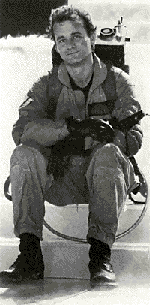
Table of Contents
- Introductions
- A Quick Note on Function Names
- Overview of the User Interface
- The Toolbar
- The Project View
- The Script View
- The Stack View
- The Console View
- The Source View
- Venkman Test Drive
Introductions
Venkman is the code name for Mozilla's JavaScript debugger. If you're not already familiar with Venkman, you may want to read the the Venkman home page first.
This document
describes how to use Venkman 0.8.6 and earlier. If you
are running one of the Venkman 0.9.x releases from the
development page,
you may find the
Venkman 0.9.x FAQ
more helpful.
Back to top.
A Quick Note on Function Names
// this is a function named foo.
function foo () {}
// this is an anonymous function!
var foo = function () {}
var o = {
// this is an anonymous function, too!
foo: function () {},
// but this is a function named bar_func
bar: function bar_func () {}
};
Figure 1Venkman will guess the intended names
for anonymous functions.
JavaScript allows programmers to declare functions without names. Keep in mind that simply assigning a function to a named variable does not name the function (see Figure 1.) While there is nothing particularly wrong with anonymous functions, they of course, provide no name for the debugger to display. This can make debugging difficult (imagine having to keep track of more than two stack frames named "anonymous".) Venkman will make an attempt to guess the intended function names for anonymous functions. The situations illustrated in Figure 1 lead to easily guessed function names, but anything that deviates too much from those examples is likely to confuse Venkman. The method used to make the guess is somewhat simplistic, and can be easily fooled by unexpected comments, multiple assignments in one line, or multiple function definitions in one line. If you regularly declare your functions in a format that does confuse Venkman, please file a bug.
When Venkman can make a guess, the function name will appear in square brackets. When Venkman can't guess, the function name will be anonymous. You'll likely see these square bracketed function names pop up in various places while using Venkman.
Keep in mind that Venkman can only
guess function names after it has seen the source. You'll have to
"visit" the file in the Source View for that to happen. You can
visit a file by clicking on the name of the file, or one of the
functions contained by it, in the Script View.
Back to top.
Overview of the User Interface
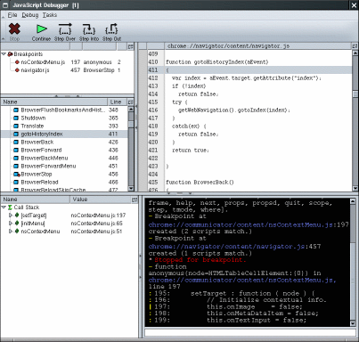
The Venkman User Interface
Venkman is both a graphic and a console debugger. Features such as
breakpoint management, call stack inspection, and variable/object
inspection are available from user interface elements and
console commands. The interactive console also allows for execution of
arbitrary JavaScript code. Venkman's keyboard shortcuts are the same as
leading visual debugging environments, and gdb users should be familiar
with Venkman's break, step, next,
finish, frame and where commands.
{kind=link}
Venkman consists of six main interface elements, which are
(counter - clockwise, starting from the top) the
Toolbar,
Project View,
Script View,
Stack View,
Console View, and
Source View.
Three of these views, the Project, Script, and Stack Views, are trees.
As is customary with trees, any item with a ``twisty'' icon next to
it (in the classic theme it's an image of + or -, in modern it's a
little triangle) contains children. Click on the twisty to open the item
and display its children. Click on the twisty a second time to close
the item.
Back to top.
The Toolbar
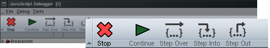
The Toolbar
Quick access to basic functionality
The Toolbar is located at the top of the screen.
The Toolbar contains icons for Stop, Continue,
Step Over, Step Into and
Step Out commands. These commands should be self explanatory,
with the possible exception of Stop, which causes the debugger to stop
when the next line of JavaScript is executed. When the X icon on the
Stop button displays "...", as in Figure 2, the debugger will
stop at the next instruction. The stop state can be toggled at any time, and can
be used to cancel a single step operation which is waiting for code to run.

Figure 2
Debugger will stop
when the next line is
executed.
When the debugger is stopped, the Stop command will be disabled. When not stopped, the Continue and Step commands will be disabled.
Keyboard equivalents for these commands are listed in the
Debug menu.
The console commands cont, next, step, and
finish are equivalent to the Continue, Step Over, Step Into,
and Step Out commands (as in gdb.)
Back to top.
The Project View
The Project View is just under the toolbar, on
the left. At the time of this writing, the Project View only lists
breakpoints, and there is no way to save a project.
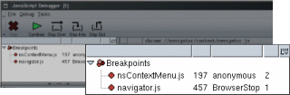
The Project View
Active breakpoints
Clicking on an item in the Breakpoints tree will navigate you to the relevant source code. Breakpoint columns are File Name, Line Number, Function Name, and Matching Scripts. The number in the Matching Scripts column indicates the number of functions that match the url and line number for the breakpoint. If all files which contain a particular breakpoint are unloaded, the match count will go to zero but the breakpoint will remain. If the file is loaded again at a later time, the breakpoint will be reset.
The console commands break and fbreak can be used
to list breakpoints in the console. The break command (when used
with no parameters) lists all current breakpoints, while
the fbreak command (when used with no parameters) lists
breakpoints which do not match any loaded files. Breakpoints which
do not match loaded files are known as Future Breakpoints because
sometime in the future, when you load a matching file, a "real"
breakpoint will be automatically set. Read the
Source View section for more information
on break and fbreak.
Back to top.
The Script View
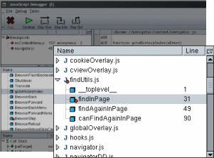
The Script View
Active files and functions
The Script View is on the left portion of the window, in the middle. When a file is loaded by the browser it will appear in this view, and when unloaded it will be removed. Files are listed in alphabetical order, grouped by file type. File names are displayed after a color coded, single letter icon representing the file extension. Figure 3 shows the table of icon and file types. At the time if this writing, the order and grouping of file names cannot be changed.
The "special" function name __toplevel__ is displayed for
scripts that are not part of an actual function.
Clicking on a file name brings you to the top of that file, while
clicking on a function name brings you to the start of that function.
Figure 3
Icon File type

.js

.html, .htm

.xul

.xml

All other files

JavaScript function
Icons in the Script View
The Line column in this view displays the line number that this function starts on. The column picker for this view (the box on the top right) can be used to display a Length column. This column displays the size of functions, in lines. Both the Line and Length column are blank for file names.
You can sort function names in alphabetical order, declaration order, or length, by clicking on the appropriate column name. As usual, click on the column name a second time to reverse the search order.
If a function has a breakpoint in it, a small red dot will show up
in the function icon, as well as the parent's file icon.
Back to top.
The Stack View
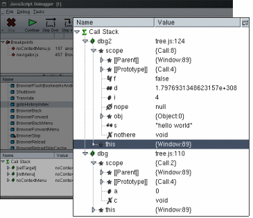The Stack View
Call stack and object inspector
The Stack View is on the left portion of the window, at the
bottom. When the
debugger is stopped, the Stack View displays the list of active functions.
The function at the top of the Stack View is the one in which
the debugger stopped, the function below it is the caller, below that
is the caller's caller, and so on. These items are referred
to as stack frames. Each stack frame contains a scope
and a this object. The scope object holds all
arguments and local variables for the stack frame. The this
object represents the value of the this keyword for the
stack frame.
Figure 4e Enumerable property r Read Only property p Permanent (cannot be deleted) A Alias to another property a Argument to a function v Declared with var
Property flags
Properties of both scope and this objects are listed alphabetically, grouped by data type. Figure 5 shows which icons represent which data types.
Properties which are of the type Object display {CTorName:PropertyCount} as their value. Where CTorName is the name of the function which constructed the object and PropertyCount is the number of properties this object has. Note that PropertyCount includes properties which are of type Function, which are not shown in the StackView. (This is to conserve visual real estate in the tree widget, in the future there will likely be an option to list functions as well.)
The column
picker for this view (the box on the top
right) can be used to display Type and Flags columns. The
Type column contains a textual description of the type of the object.
Flags lists one or more applicable flags for this object. Flags are
shown enumerated in Figure 4
Figure 5
Icon
Data Type
Icon
Data Type

Call Stack

Stack Frame

Void (undefined) value

Null value

Boolean value

String value

Integer value

Double value

Object value

Function value
Icons in the Stack View
For some objects, the magic property [[Parent]] and/or [[Prototype]] may be listed. These properties represent the JavaScript engine's notion of the parent and/or prototype of the object in question. As a general rule, to locate global variables, look at the [[Parent]] property of the scope object. See the ECMAScript specification for more information on these magic properties.
Clicking on a stack frame will display the top of the frame's function. Clicking on an object, on the other hand, will display the file and line that object was created on.
If an item visible in the Stack View is modified via the Console View the modification will be immediately reflected in the Stack View.
At the time of this writing, the Stack View's default sort order and
grouping are not adjustable.
Back to top.
The Console View
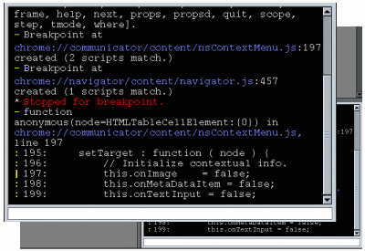The Console View
Command line interface to the debugger
The Console View appears in the lower right hand corner of the window. This view provides a command line interface to the debugger. Commands are entered in the text box, and responses are appended to the end of the output. Type commands in the input area (the text box) to list all of the commands available. The help command can be used to get additional information about a specific command. For example, type help next to see how to use the next command.
The input area supports command history and tab-completion for
command names. Command history remembers the last 20 commands entered.
The up and down arrows can be used to revisit these previous commands.
Tab completion allows the user to type the first portion of a command, and press tab
twice to see possible completions. If only one
command matches, it will be auto-completed on the first tab.
Back to top.
The Source View
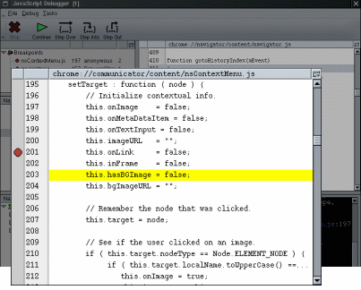The Source View
Source code, line numbers, and breakpoints
The Source View is a read-only file viewer. Files and specific functions within them can be displayed by selecting the appropriate file or function name in the Script View.
When script execution is interrupted by the debugger, the line of the file where the interruption occurred is automatically displayed in the Source View. The line in question will be highlighted in yellow to make it easy to spot.
Clicking in the left margin of this view will set a breakpoint at that line. If the breakpoint is successfully set, the margin will show a red octagon, and both the Project View and Console View will provide feedback. The breakpoint can be cleared by clicking in the margin again (on the red octagon.) Breakpoints cannot be set on lines which do not contain executable code, such as blank and comment lines. For these lines, the Console View will display an error message explaining why the breakpoint could not be set.
Breakpoints can also be set and cleared from the Console View, with
the break and fbreak commands. The break
command takes a file pattern and line number. Any loaded file which
matches the file pattern, and contains an executable line at the requested
line number will have a breakpoint set. If no loaded files match the
file pattern or line number, an error message is printed to the console
and the command fails. The fbreak command is identical, with the
exception that if no files match the pattern or line, a "future breakpoint"
is recorded. The next time a file is loaded that matches the pattern
and line, a breakpoint will be set. In this way, fbreak allows
one to set breakpoints in files that are not yet loaded, as well
as set breakpoints that are triggered when a file is loaded.
Back to top.
Venkman Test Drive
The following procedure attempts to walk a user through a (contrived) sample debug session, in order to become familiar with the basic commands. The source code used in the sample is subject to change without notice, please bear this in mind when interpreting file names and line numbers.
1. Start Mozilla with the -venkman command line argument.
The debugger must be started before the scripts it will debug.
This limitation will either be fixed, or worked around at
some later time. For the time being, the debugger needs to
be started like this to debug browser chrome.
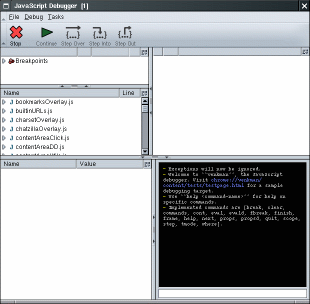
Step 2
Start Venkman and launch a browser window.
{kind=link}
Debugging JavaScript components presents yet another opportunity for scripts to be loaded before the debugger is initialized. Because component registration happens before command line processing, when a component changes it will be reloaded at registration time, and the debugger will not see it. At this time, the only workaround is to start the browser twice; once to re-register the modified component, and once to debug it.
2. Launch a browser window
Select "Navigator" from the debugger's Tasks menu.
3. Type "break ContextMenu 357" in the debugger.
The console command "break" is used to set and list breakpoints. The first parameter is the file name that contains the JavaScript you want to break at. The second parameter is the line number. You don't need to specify the entire file name. In this example, we are setting a breakpoint in the function called when the browser wants to create a context menu for web content.
Alternately, one could select nsContextMenu.js from the Scripts View,
locate line 357, and click in the left margin. Setting breakpoints
in this manner is equivalent to using the break command in the
console.
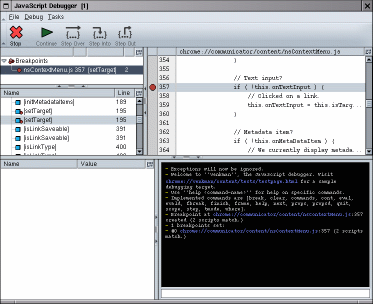
Step 4
Set and list a breakpoint
{kind=link}
4. Type "break" in the debugger.
If you don't provide arguments to the "break" command, all breakpoints are listed.
5. Cause a context menu to be created in the Navigator window.
Right click in the content area usually works.
You should have hit the breakpoint you just set. The debugger should have displayed "Stopped for breakpoint", along with the file name, line number, and snippet source code from where it stopped.
6. Type "step" in the debugger.
This executes the line of JavaScript we're stopped on, and stops again before the next line is executed. The step command is also available via the "Step Into" button on the toolbar, and is bound to the F11 key.
In addition to Step In, which will execute a single line of JavaScript and stop, Step Over can be used to step over a impending function call, and return control to the debugger when the call returns. Step Out executes until the current function call exits.
At this point, you should be at line 359,
this.onTextInput = this.isTargetATextBox(elem);.
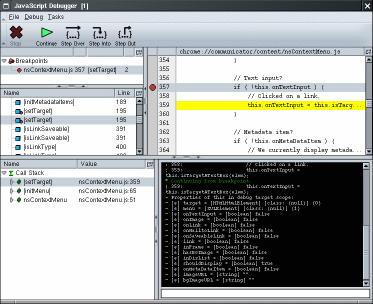
Step 7
Hit breakpoint, examine properties
{kind=link}
7. Type "props this" in the debugger.
The props command lists the properties of an object. The letters and dashes before the values are the "flags" for that value. The flags are enumerated in Figure 4, above.
8. Step one more time.
You should be in the isTargetATextBox function call now.
9. Type "frame" in the debugger.
When used with no arguments, the "frame" command shows you the source code for the current frame, with a few lines of context.
10. Type "scope" in the debugger.
The scope command lists the local variables for the current frame. In this case there are two locals, node and attrib. The node property is an argument to the function, while attrib is a local variable.
The scope is also visible in the Stack View. Open the [isTargetATextBox] frame, and the scope node below it.
11. Type "where" in the debugger.
The "where" command lists the current call stack. The frame command can be used change the current frame to any of the frames listed here. For example, to view variables in the code that called isTargetATextBox, type "frame 1", and "scope". To return to the top frame, type "frame 0".
12. Type "eval window._content"
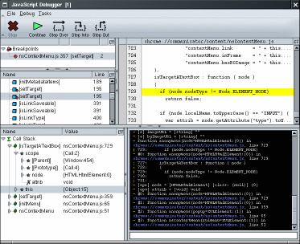
Step 11
Single step, examine scope and call stack.
{kind=link}
The "eval" command evaluates arbitrary JavaScript in the current frame. Eval'ing window._content itself isn't very useful, you'll have to think up something more creative yourself.
13. Type "break"
The "break" command when used with no arguments lists the current breakpoints by index.
14. Type "clear 0"
The "clear" command is used to clear breakpoints. In this example, we're clearing by breakpoint number, which we got from the "break" command in the step before this.
15. Type "cont"
The "cont" command is used to continue execution. The context menu should pop up just like it always does.